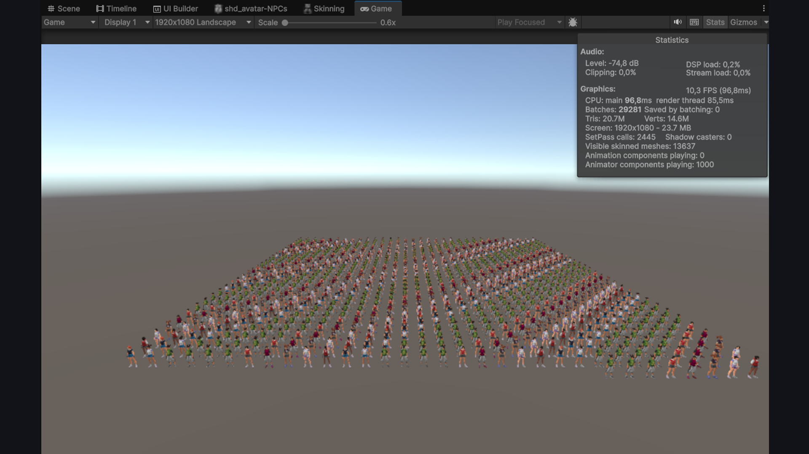
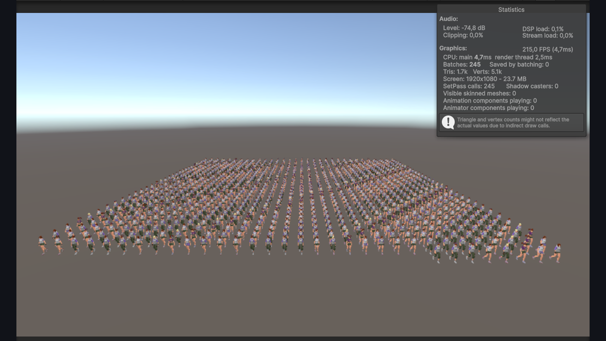

From 10 to 200 FPS with a crowd of NPCs on screen
A living city needs crowds of NPCs, each dressed from the same system as the player. With a standard Animator and skinned mesh per character, a thousand of them dropped the game to ~10 FPS (96 ms/frame) — unplayable, and far worse on a real phone.
I moved NPC animation and rendering onto the GPU. Animation is baked into a texture at edit time, skinning runs in the shader instead of on the CPU, and the crowd is batched by mesh so the same garment on different characters draws together.
A custom baker turns each clip into a vertex-animation texture that the shader samples per frame — no Animator, no SkinnedMeshRenderer. A Burst-compiled job feeds the GPU, keeping it off the main thread. The two NPCs in the video are identical to the eye: one on a classic Animator, one fully on the GPU.

